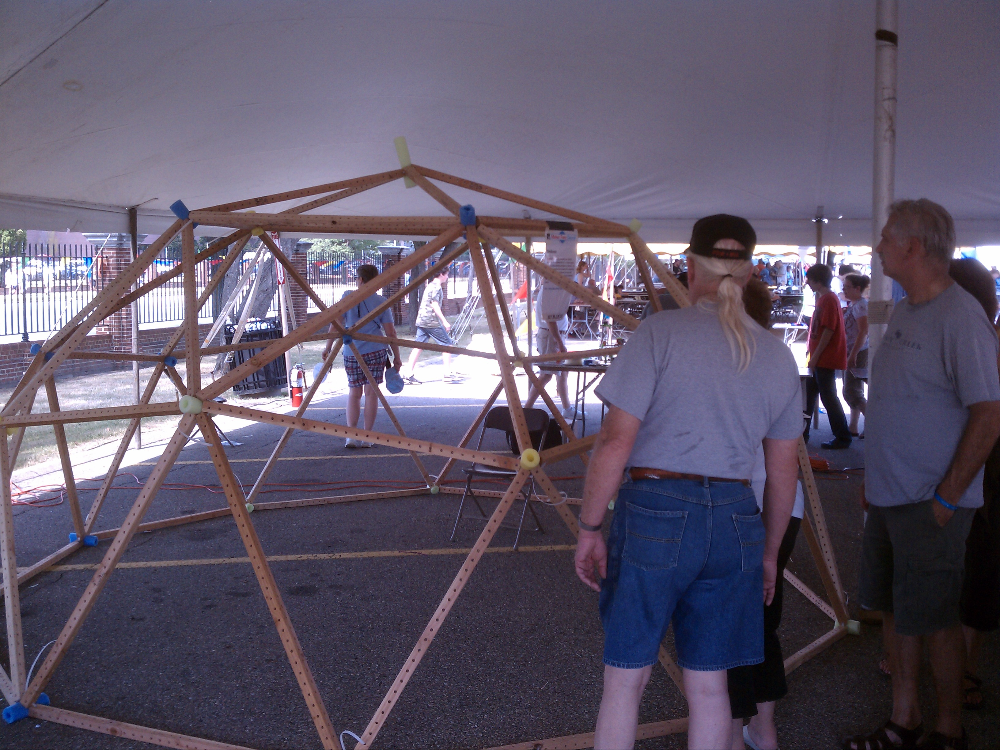
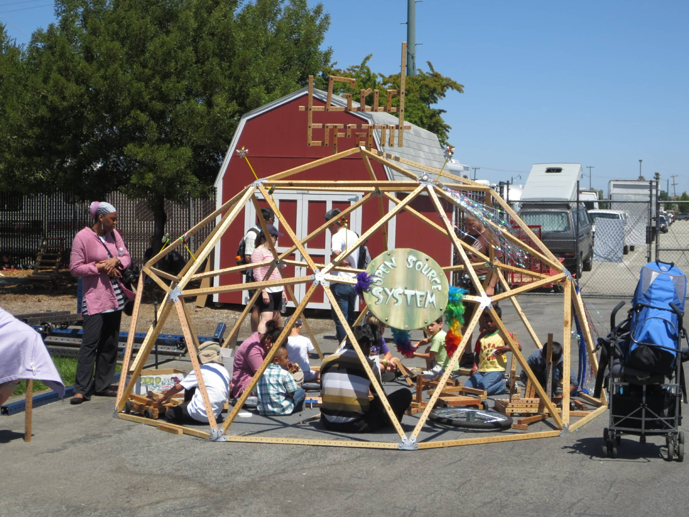
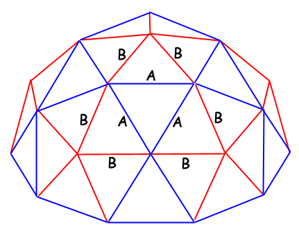

geodesic domes revision 8428
^ Projects infobox ^^
| image | Plate-griddome.png |
| designers | [[user:tim|Timothy Schmidt]] |
| date | 2012 |
| vitamins | |
| materials | |
| transformations | |
| lifecycles | |
| tools | [[wrenches|Wrenches]] |
| parts | [[plates|Plates]], [[frames|Frames]], [[nuts|Nuts]], [[bolts|Bolts]], [[end_caps|End caps]] |
| techniques | [[bolting|Bolting]] |
| files | |
| suppliers | |
| git | |
Introduction
A geodesic dome is a hemispherical thin-shell structure based on a geodesic polyhedron. The triangular elements of the dome are structurally rigid and distribute the structural stress throughout the structure, making geodesic domes able to withstand very heavy loads for their size. Its "omnitriangulated" surface provides an inherently stable structure, and a sphere encloses the greatest volume for the least surface area.
Challenges
Creating joints at angles other than 90 degrees can pose a significant challenge.
Approaches
Geodesic dome brackets were designed, cut, and bent into shape upon installation. Frames were cut such that an 8ft 2x2 could be cut once to produce both lengths needed.





